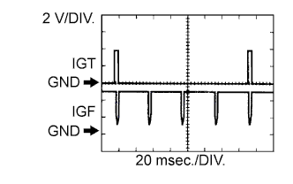

DTC P0351 Ignition Coil "A" Primary / Secondary Circuit |
DTC P0352 Ignition Coil "B" Primary / Secondary Circuit |
DTC P0353 Ignition Coil "C" Primary / Secondary Circuit |
DTC P0354 Ignition Coil "D" Primary / Secondary Circuit |
DTC P0355 Ignition Coil "E" Primary / Secondary Circuit |
DTC P0356 Ignition Coil "F" Primary / Secondary Circuit |
DTC P0357 Ignition Coil "G" Primary / Secondary Circuit |
DTC P0358 Ignition Coil "H" Primary / Secondary Circuit |
| DTC No. | DTC Detection Condition | Trouble Area |
| P0351 P0352 P0353 P0354 P0355 P0356 P0357 P0358 | No IGF signal is sent to the ECM while the engine is running (ECM does not receive any IGF signals despite the ECM sending an IGT signal to the igniter) (1 trip detection logic). |
|
|  |
| Tester Connection | Tool Setting | Condition | Specified Condition |
| C30-24 (IGT1) - C30-12 (E1) | 2 V/DIV., 20 msec./DIV. | Idling | The correct waveform is as shown |
| C29-27 (IGT2) - C30-12 (E1) | 2 V/DIV., 20 msec./DIV. | Idling | The correct waveform is as shown |
| C30-27 (IGT3) - C30-12 (E1) | 2 V/DIV., 20 msec./DIV. | Idling | The correct waveform is as shown |
| C29-26 (IGT4) - C30-12 (E1) | 2 V/DIV., 20 msec./DIV. | Idling | The correct waveform is as shown |
| C29-25 (IGT5) - C30-12 (E1) | 2 V/DIV., 20 msec./DIV. | Idling | The correct waveform is as shown |
| C30-28 (IGT6) - C30-12 (E1) | 2 V/DIV., 20 msec./DIV. | Idling | The correct waveform is as shown |
| C30-26 (IGT7) - C30-12 (E1) | 2 V/DIV., 20 msec./DIV. | Idling | The correct waveform is as shown |
| C30-25 (IGT8) - C30-12 (E1) | 2 V/DIV., 20 msec./DIV. | Idling | The correct waveform is as shown |
| C30-6 (IGF1) - C30-12 (E1) | 2 V/DIV., 20 msec./DIV. | Idling | The correct waveform is as shown |
| C31-5 (IGF2) - C30-12 (E1) | 2 V/DIV., 20 msec./DIV. | Idling | The correct waveform is as shown |
| Required Sensors/Components (Main) | Igniter |
| Required Sensors/Components (Related) | ECM |
| Frequency of Operation | Continuous |
| 1.INSPECT IGNITION COIL ASSEMBLY (POWER SOURCE) |
 |
Disconnect the ignition coil connector.
Measure the resistance according to the value(s) in the table below.
| Tester Connection | Condition | Specified Condition |
| C1-4 (GND) - Body ground | Always | Below 1 Ω |
| C2-4 (GND) - Body ground | Always | Below 1 Ω |
| C3-4 (GND) - Body ground | Always | Below 1 Ω |
| C4-4 (GND) - Body ground | Always | Below 1 Ω |
| C5-4 (GND) - Body ground | Always | Below 1 Ω |
| C6-4 (GND) - Body ground | Always | Below 1 Ω |
| C39-4 (GND) - Body ground | Always | Below 1 Ω |
| C40-4 (GND) - Body ground | Always | Below 1 Ω |
Turn the engine switch on (IG).
Measure the voltage according to the value(s) in the table below.
| Tester Connection | Switch Condition | Specified Condition |
| C1-1 (+B) - C1-4 (GND) | Engine switch on (IG) | 11 to 14 V |
| C2-1 (+B) - C2-4 (GND) | Engine switch on (IG) | 11 to 14 V |
| C3-1 (+B) - C3-4 (GND) | Engine switch on (IG) | 11 to 14 V |
| C4-1 (+B) - C4-4 (GND) | Engine switch on (IG) | 11 to 14 V |
| C5-1 (+B) - C5-4 (GND) | Engine switch on (IG) | 11 to 14 V |
| C6-1 (+B) - C6-4 (GND) | Engine switch on (IG) | 11 to 14 V |
| C39-1 (+B) - C39-4 (GND) | Engine switch on (IG) | 11 to 14 V |
| C40-1 (+B) - C40-4 (GND) | Engine switch on (IG) | 11 to 14 V |
| *a | Front view of wire harness connector (to Ignition Coil Assembly) |
|
| ||||
| OK | |
| 2.CHECK HARNESS AND CONNECTOR (IGNITION COIL ASSEMBLY - ECM) |
Disconnect the ignition coil connector.
Disconnect the ECM connector.
Measure the resistance according to the value(s) in the table below.
| Tester Connection | Condition | Specified Condition |
| C1-2 (IGF1) - C30-6 (IGF1) | Always | Below 1 Ω |
| C2-2 (IGF2) - C31-5 (IGF2) | Always | Below 1 Ω |
| C3-2 (IGF2) - C31-5 (IGF2) | Always | Below 1 Ω |
| C4-2 (IGF1) - C30-6 (IGF1) | Always | Below 1 Ω |
| C5-2 (IGF2) - C31-5 (IGF2) | Always | Below 1 Ω |
| C6-2 (IGF1) - C30-6 (IGF1) | Always | Below 1 Ω |
| C39-2 (IGF1) - C30-6 (IGF1) | Always | Below 1 Ω |
| C40-2 (IGF2) - C31-5 (IGF2) | Always | Below 1 Ω |
| C1-3 (IGT1) - C30-24 (IGT1) | Always | Below 1 Ω |
| C2-3 (IGT2) - C29-27 (IGT2) | Always | Below 1 Ω |
| C3-3 (IGT3) - C30-27 (IGT3) | Always | Below 1 Ω |
| C4-3 (IGT4) - C29-26 (IGT4) | Always | Below 1 Ω |
| C5-3 (IGT5) - C29-25 (IGT5) | Always | Below 1 Ω |
| C6-3 (IGT6) - C30-28 (IGT6) | Always | Below 1 Ω |
| C39-3 (IGT7) - C30-26 (IGT7) | Always | Below 1 Ω |
| C40-3 (IGT8) - C30-25 (IGT8) | Always | Below 1 Ω |
| C1-2 (IGF1) or C30-6 (IGF1) - Body ground | Always | 10 kΩ or higher |
| C2-2 (IGF2) or C31-5 (IGF2) - Body ground | Always | 10 kΩ or higher |
| C3-2 (IGF2) or C31-5 (IGF2) - Body ground | Always | 10 kΩ or higher |
| C4-2 (IGF1) or C30-6 (IGF1) - Body ground | Always | 10 kΩ or higher |
| C5-2 (IGF2) or C31-5 (IGF2) - Body ground | Always | 10 kΩ or higher |
| C6-2 (IGF1) or C30-6 (IGF1) - Body ground | Always | 10 kΩ or higher |
| C39-2 (IGF1) or C30-6 (IGF1) - Body ground | Always | 10 kΩ or higher |
| C40-2 (IGF2) or C31-5 (IGF2) - Body ground | Always | 10 kΩ or higher |
| C1-3 (IGT1) or C30-24 (IGT1) - Body ground | Always | 10 kΩ or higher |
| C2-3 (IGT2) or C29-27 (IGT2) - Body ground | Always | 10 kΩ or higher |
| C3-3 (IGT3) or C30-27 (IGT3) - Body ground | Always | 10 kΩ or higher |
| C4-3 (IGT4) or C29-26 (IGT4) - Body ground | Always | 10 kΩ or higher |
| C5-3 (IGT5) or C29-25 (IGT5) - Body ground | Always | 10 kΩ or higher |
| C6-3 (IGT6) or C30-28 (IGT6) - Body ground | Always | 10 kΩ or higher |
| C39-3 (IGT7) or C30-26 (IGT7) - Body ground | Always | 10 kΩ or higher |
| C40-3 (IGT8) or C30-25 (IGT8) - Body ground | Always | 10 kΩ or higher |
|
| ||||
| OK | |
| 3.CHECK WHETHER DTC OUTPUT RECURS (DTC P0351, P0352, P0353, P0354, P0355, P0356, P0357 OR P0358) |
Connect the intelligent tester to the DLC3.
Turn the engine switch on (IG).
Turn the tester on.
Clear DTCs (Click here).
Shuffle the arrangement of the ignition coil assembles (among the No. 1 to No. 8 cylinders).
Drive the vehicle in accordance with the driving pattern described in Confirmation Driving Pattern.
Check the DTCs output on the intelligent tester.
| Result | Proceed to |
| Same DTC is output | A |
| Different ignition coil DTC is output | B |
|
| ||||
| A | ||
| ||